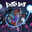
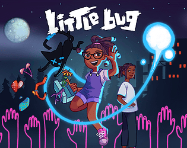

 Little Bug (full version)
Detalhes
|  | |
| Tempo de jogo | Não Jogado |
| Última Atividade | Nunca |
| Adicionado | 04/04/2025 0:19:52 |
| Modificado | 04/04/2025 0:20:50 |
| Status de Conclusão | Not Played |
| Biblioteca | Itch.io |
| Fonte | itch.io |
| Plataforma | PC (Windows) |
| Data de Lançamento | 25/09/2018 |
| Pontuação da Comunidade | 70 |
| Avaliação da crítica | |
| Pontuação do Usuário | |
| Gênero | Adventure Indie Platform Puzzle |
| Desenvolvedor | Buddy System |
| Editor | Fig Publishing Inc. |
| Funções | Co-Operative Single Player |
| Links | Official Steam GOG Itch YouTube Discord Twitch |
| Tag | [GGDeals] Synced |
Descrição
The full version of Little Bug is here!
Get Nyah Home
Nyah is walking home from school when she's suddenly cast into an uncanny world where dangerous spirits linger restlessly in bottomless canyons, icy caves, and moonlit deserts. Play as Nyah and her spirit light in tandem as you immerse yourself in this foreboding, atmospheric landscape. Will Nyah use her new found light to find her way home or will she lose her way amongst the many dangers that roam in the moonlight?

Simple Controls, Complex Gameplay:
Nyah can walk on the ground and collect treasures while her light can fly in any direction - you control them both at the same time. Forming a telekinetic beam between them, you’ll create a powerful connection that can swing Nyah to new heights, destroy barriers, thwart spirits and light the way to secret locations. Your coordination with these two characters is key, as disembodied spirits can appear without warning and hurt Nyah or her light. You’ll learn their unique play style intuitively and quickly as fresh challenges emerge to test you in the wilderness.

Discover Dozens of Unique Items
Collect dozens of unique treasures in Nyah's lunchbox that reveal memories from Nyah’s past and rearrange them however you like. Decide which items to keep with you on your journey and which to offer to the mysterious spirit cat Roadkill, who can unlock secret challenge levels with special items.
Awards!
FINALIST - Indiecade 2018
OFFICIAL SELECTION - The Mix at GDC and E3 2018
CROWDFUNDED - by 315 backers on Fig 2017
OFFICIAL SELECTION - Fantastic Arcade 2016
BEST PLATFORMER - Intel Level Up 2016
SPOTLIGHT - Indie Game Tasting 2016
Stream or download the original soundtrack on Bandcamp.
by Buddy System, a small bedroom-studio team from LA. Follow @buddysystemla on twitter to see what we're up to! We're on discord and Steam too :)
----------------------------------------------------------------------------
We highly recommend using a gamepad.
Mac and Linux users may need a 3rd party driver.
If you are playing with a lower end graphics card (aka macbooks and such):
You may experience choppy gameplay, but not to worry - try lowering resolution and graphics quality. Also, we recommend enabling vSync. All of this can be done via the in-game options menu.